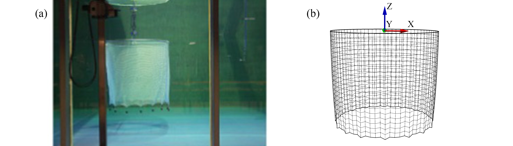

Guide for input file — cageDict¶

Currently, cageDict is the only one input file for the program and it contains all the necessary information for numerical simulations.
CageDict is a python dictionary style input file. The name of this dictionary can be varied as you wish.
Just follow the syntax of a dictionary and record all the necessary parameters for simulations.
There are some assumptions when we generate mesh for simulations:
Although the flow direction can be change in the Environment, we assume the X+ is the flow direction when we generate the mesh.
Here is the explanation of the parameters in the dictionary.
Environment¶
The information about the environmental conditions.
current: a python list. Unit: [m/s].
One velocity,
[[u,v,w]]. Input the three components of the current velocity that you are indented to use.Multiple velocities,
[[u1,v1,w1],[u2,v2,w2],[u3,v3,w3]...[un,vn,wn]]. Input the current velocities as a list of velocity. The program will run each velocity within the given timeLength sequentially.
waterDepth: a floating point number. Unit: [m]. The depth of water.
waves: a python list or “False”.
If there is no wave, please use
Falseto disable it.If wave are applied to the environment, Please use
[wave height, wavelength]to define a deep water airy wave. Unit: [m]
fluidDensity: a floating point number. Unit: [kg/m^3]. The density of fluid, sea water: 1025, fresh water: 1000.
MeshLib¶
MeshLib is used to tell the mesh generator which library will be used to generate mesh.
The value is chosen from following string:
- multi_cage: multi fish cage without mooring system.
- multi_moored_cages:multi fish cages with mooring system.
- panel: a single net panel or few net panels.
- single_cage: a single fish cage.
- trawlNet: under construction.
CageShape¶
Define the shape of cage.
shape: a string chosen from belows. Unit: [-].
cylindrical-NoBottom: a cylindrical fish cage without bottom net.cylindrical-WithBottom: a cylindrical fish cage with bottom net. The bottom can be a flat plane or a cone shape. If it is a cone shape, the cageCenterTipDepth should be larger thant cageHeight.squared-NoBottom: a squared fish cage without bottom net.squared-WithBottom: a squared fish cage with bottom net.
elementOverCir: a integer number. Unit: [-]. The element that along the circumference of fish cage.
elementOverHeight: a integer number. Unit: [-]. The element that along the height of fish cage.
cageDiameter: a floating point number. Unit: [m]. The diameter of the fish cage.
cageHeight: a floating point number. Unit: [m]. The height of the fish cage
cageCenterTipDepth:a floating point number. Unit: [m]. The depth of cone shape.
Net¶
Define the netting of cage.
HydroModel: a string to indicate the hydrodynamic model. A detailed explanation can be found later.
Screen model:
Screen-S1,Screen-S2,Screen-S3…Morison model:
Morison-M1,Morison-M3,Morison-M3…
nettingType: a string to indicate the netting type.
square: square netting that are commonly used in aquaculture cagerhombus: rhombus netting that are commonly used in fishing gear, e.g., trawl net, purse seine.
Sn: a floating point number. Unit: [-]. The solidity ratio of netting.
twineDiameter: a floating point number. Unit [m]. The diameter of twine in the physical netting.
meshLength: a floating point number. Unit [m]. The half mesh length of the physical netting.
netYoungmodule: a floating point number. Unit [Pa]. The Young’s modulus of netting.
netRho: a floating point number. Unit: [kg/m^3]. The density of the netting.
FloatingCollar¶
Define the floating collar of cage.
floaterCenter:a python list. Unit: [m].
One cage,
[x,y,z]. Input the position of the floater center.Multiple cages,
[[x1,y1,z1],[x2,y2,z2],[x3,y3,z3]...[xn,yn,zn]]. If there are multiple cages, input the position of each floater center and make it a python list.
collarNumber: a integer number. Unit: [-]. The number of floater collar.
topRingRadius: a floating point number. Unit [m]. The pipe diameter of the floating pipe.
SDR: a floating point number. Unit [-]. The ratio of pipe diameter to wall thickness.
floaterRingRho: a floating point number. Unit [kg/m^3-]. The effective density of floater collar.
floaterRingYoungModule: a floating point number. Unit [Pa]. The Young’s modulus of floater collar.
Weight¶
Define the weight system of cage.
weightType: a string to indicate the weight type.
sinkers: conventional type, numbers of sinkers are hung at the bottom of fish cageallfixed: all the nodes are fixed. Thus, the fish cage have no deformation.sinkerTube: Using sinker tube to keep cultivation volume.sinkerTube+centerweight: sinker tube + center weight to keep the cultivation volume.
bottomRingRadius: a floating point number. Unit [m]. The pipe diameter of the sinker tube.
bottomRingDepth: a floating point number. Unit [m]. The initial depth of bottom ring.
SDR: a floating point number. Unit [-]. The ratio of pipe diameter to wall thickness.
bottomRingRho: a floating point number. Unit [kg/m^3-]. The effective density of floater collar.
bottomRingYoungModule: a floating point number. Unit [Pa]. The Young’s modulus of floater collar.
numOfSinkers: a integer number. Unit: [-]. The number of sinker.
sinkerWeight: a floating point number. Unit [N]. The submerged wight of each sinker.
tipWeight: a floating point number. Unit [N]. The submerged wight at the cone tip.
Mooring¶
Define the mooring system of cage.
mooringType:a string to indicate the mooring type.
None: No mooring system. The floating collar is fixed on the sea surface.hastag: The mooring system is looked like ‘#’ structure.Xshape: The mooring system is looked like ‘X’ structure.
frameLength’: a floating point number. Unit [m]. The length of the fame line, distance between two buoys.
bouncyForce’:a floating point number. Unit [N]. The Maximum bouncy force that the buoy can provide.
bouncyLine:a floating point number. Unit [m]. The length of the buoy line, distance between the buoy and plate.
mooringLine: a floating point number. Unit [m]. The length of the mooring line, distance between the mooring point and plate.
Solver¶
Define the solver of simulation
version: a string to indicate the version of code_Aster. You can use the following type:
stable,testing.coupling: a string to indicate the whether or not using coupling.
False: No coupling. Calculated only with Code_AsterFSI: Fully couple with OpenFoam.simiFSI: Semi coupled, only transfer the value from code_aster to OpenFOAM
method: a string to indicate the method to solve the equation.
HHT: hht-alpha method.alpha:a floating point number for alpha in hht-alpha method.
24.3is the default number for netting.timeStep: a floating point number. Unit [s]. The time step for simulations, usually between 0.2-0.01.
timeLength: a floating point number. Unit [s]. The length of time for the simulation with each current velocity. Usually, 10 s is enough to reach equilibrium.
MaximumIteration: a integer number. Unit: [-]. The number of iteration at each time step, the default value is
1000.Residuals: a floating point number. Unit [-]. The threshold for the maximum of residual.